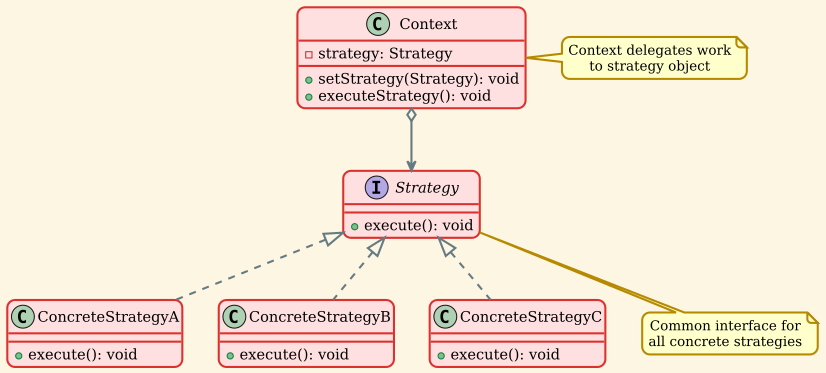
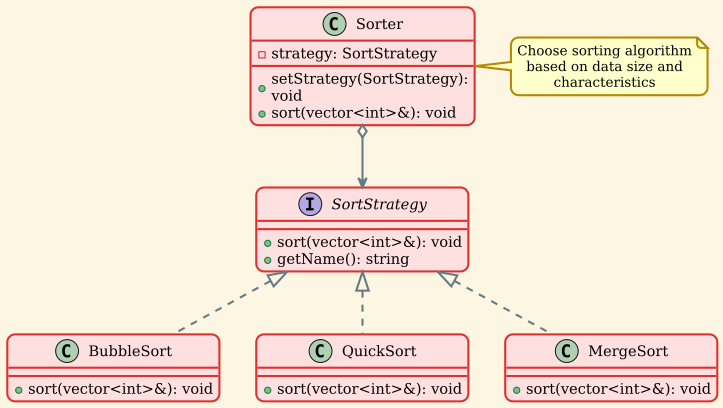
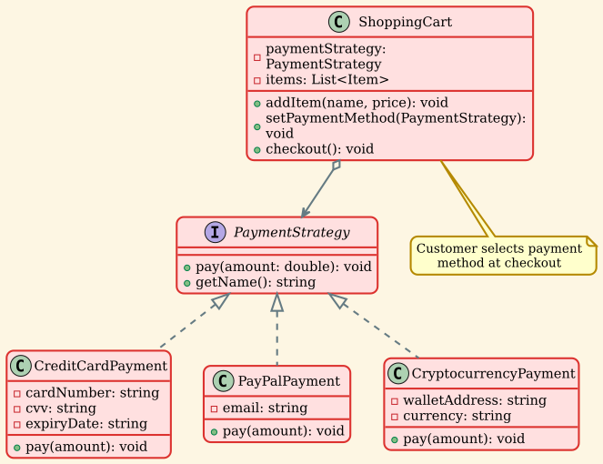
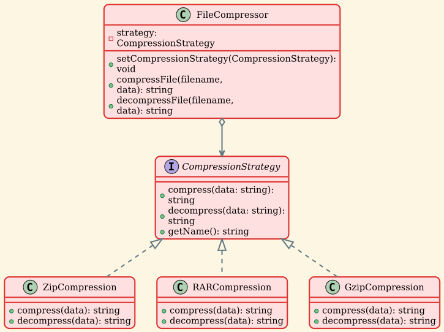
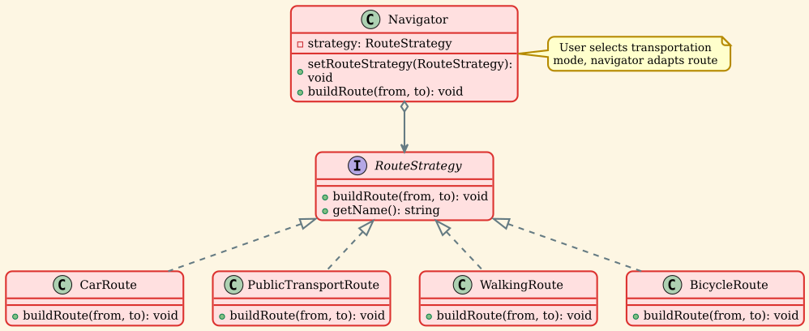
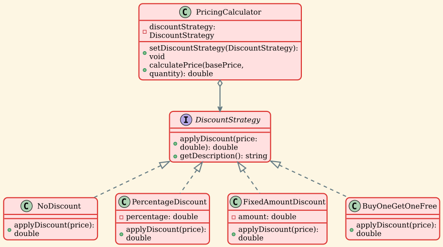
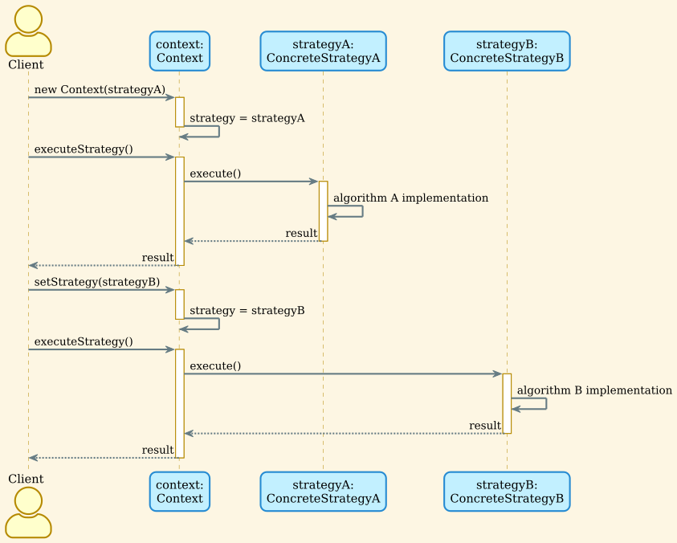

Strategy Pattern¶
Overview¶
The Strategy Pattern is a behavioral design pattern that defines a family of algorithms, encapsulates each one, and makes them interchangeable. Strategy lets the algorithm vary independently from clients that use it. This pattern promotes the Open/Closed Principle by allowing you to add new algorithms without changing the existing code.
Intent¶
- Define a family of algorithms and encapsulate each one
- Make algorithms interchangeable within that family
- Let the algorithm vary independently from clients that use it
- Eliminate conditional statements for algorithm selection
Problem¶
When you have multiple ways to perform a task (different algorithms), you often end up with large conditional statements (if-else or switch-case) that select which algorithm to use. This approach leads to:
- Code that's difficult to maintain and extend
- Violation of the Open/Closed Principle (must modify code to add algorithms)
- Algorithm logic scattered throughout the code
- Difficulty testing algorithms independently
- Tight coupling between the context and algorithm implementations
Solution¶
Extract each algorithm into separate classes with a common interface. The context maintains a reference to a strategy object and delegates the algorithm execution to it. Clients can switch strategies at runtime, and new strategies can be added without modifying existing code.
Structure¶
Class Diagram¶

Components¶
-
Strategy (Interface)
- Declares an interface common to all supported algorithms
- Context uses this interface to call the algorithm
-
ConcreteStrategy
- Implements the algorithm using the Strategy interface
- Each concrete strategy provides a different implementation
-
Context
- Maintains a reference to a Strategy object
- May define an interface to let Strategy access its data
- Delegates algorithm execution to the strategy
Implementation Examples¶
Example 1: Sorting Strategies¶
Different sorting algorithms for different data characteristics.

Algorithm Selection Criteria:
| Algorithm | Best For | Time Complexity | Space Complexity |
|---|---|---|---|
| Bubble Sort | Small datasets (< 10 items) | O(n²) | O(1) |
| Quick Sort | General purpose, large datasets | O(n log n) avg | O(log n) |
| Merge Sort | Stable sort needed, linked lists | O(n log n) | O(n) |
Usage:
Example 2: Payment Processing¶
Different payment methods in an e-commerce system.

Usage:
Example 3: Compression Strategies¶
Different compression algorithms for files.

Compression Trade-offs:
- ZIP: Good balance, wide compatibility
- RAR: Better compression ratio, proprietary
- GZIP: Fast, commonly used for web content
Usage:
Example 4: Navigation Routes¶
Different routing strategies for navigation apps.

Route Characteristics:
| Mode | Speed | Cost | Environment | Health |
|---|---|---|---|---|
| Car | Fast | High (fuel) | High impact | Low |
| Public Transit | Medium | Low | Low impact | Low |
| Bicycle | Medium | Very low | Very low | High |
| Walking | Slow | Free | Zero | Very high |
Usage:
Example 5: Discount Pricing¶
Different discount strategies for pricing.

Usage:
Sequence Diagram¶

Real-World Applications¶
1. Sorting Algorithms¶
Standard Library Example:
Custom Comparators:
2. Payment Gateways¶
E-commerce Platforms: - Credit cards: Stripe, Square, Authorize.net - Digital wallets: PayPal, Apple Pay, Google Pay - Bank transfers: ACH, Wire transfer - Cryptocurrency: Bitcoin, Ethereum - Buy now, pay later: Klarna, Affirm
Each payment method has different: - Processing fees - Processing times - Security requirements - Geographic availability
3. Data Serialization¶
Format Selection:
4. Image Processing¶
Filter Strategies: - Blur: Gaussian blur, motion blur, radial blur - Sharpen: Unsharp mask, high-pass filter - Color: Grayscale, sepia, HDR - Artistic: Oil painting, cartoon, sketch
5. Authentication Methods¶
Login Strategies:
6. Caching Strategies¶
Cache Eviction Policies: - LRU (Least Recently Used) - LFU (Least Frequently Used) - FIFO (First In, First Out) - Random replacement
7. Rendering Engines¶
Graphics Rendering: - Rasterization: Fast, real-time games - Ray tracing: Realistic lighting, movies - Path tracing: Physically accurate, architectural visualization
8. Text Search Algorithms¶
Search Strategies: - Brute force: Simple, O(n*m) - Boyer-Moore: Fast for large texts - Rabin-Karp: Multiple pattern search - Regex: Complex pattern matching
Design Considerations¶
Advantages¶
✅ Open/Closed Principle: Add new strategies without modifying existing code.
✅ Runtime Algorithm Selection: Switch algorithms dynamically based on conditions.
✅ Eliminates Conditional Statements: Replace complex conditionals with polymorphism.
✅ Testability: Each strategy can be tested independently.
✅ Reusability: Strategies can be reused across different contexts.
Disadvantages¶
❌ Increased Number of Objects: Each algorithm requires a separate class.
❌ Client Awareness: Clients must be aware of different strategies to select the appropriate one.
❌ Communication Overhead: Strategy may need access to context data.
❌ Overkill for Simple Cases: If you have only 2-3 algorithms that rarely change, simpler approaches may suffice.
Strategy vs State Pattern¶
| Aspect | Strategy Pattern | State Pattern |
|---|---|---|
| Intent | Select algorithm family | Change behavior based on state |
| Who decides | Client selects strategy | Context or states decide transitions |
| Independence | Strategies are independent | States often know about other states |
| Transitions | No automatic transitions | States can transition to other states |
| Focus | Algorithm selection | State management |
| Usage | Different ways to do same thing | Different behavior for different states |
Strategy Example:
State Example:
When to Use Strategy Pattern¶
✅ Use Strategy Pattern when:
- You have multiple algorithms for a specific task
- You want to switch algorithms at runtime
- You have many related classes that differ only in behavior
- An algorithm uses data that clients shouldn't know about
- A class has multiple conditional statements that select behavior
Good Candidates: - Sorting algorithms - Compression algorithms - Payment processing - Route planning - Data validation - Rendering methods - Search algorithms
❌ Avoid Strategy Pattern when:
- You have only one or two simple algorithms
- Algorithms never change
- Simple conditional logic is sufficient
- The overhead of extra classes is unjustified
- All clients use the same algorithm
Use Simpler Alternatives: - Function pointers or lambdas for simple cases - Template methods for similar algorithms - Simple if-else for 2-3 alternatives
Best Practices¶
1. Use Smart Pointers¶
2. Provide Default Strategy¶
3. Factory for Strategy Creation¶
4. Strategy with Context Data¶
5. Fluent Interface¶
Related Patterns¶
- State: Similar structure but different intent. State manages state transitions; Strategy selects algorithms.
- Template Method: Defines algorithm skeleton in base class with steps overridden by subclasses. Strategy encapsulates entire algorithms.
- Factory Method: Can be used to create strategies.
- Flyweight: Strategies can be implemented as flyweights if they have no state.
- Decorator: Both patterns involve composing objects, but Decorator adds responsibilities while Strategy changes algorithms.
Summary¶
The Strategy Pattern provides a clean way to: - Encapsulate algorithms in separate classes - Switch algorithms at runtime based on conditions - Eliminate conditional statements that select behavior - Follow the Open/Closed Principle by adding new strategies without modifying existing code
Use it when you have multiple algorithms and need flexibility to switch between them. It's particularly valuable in scenarios like sorting, payment processing, compression, navigation, and any situation where "how" something is done can vary while "what" is done remains the same.
The pattern shines in systems where algorithm selection depends on runtime conditions, user preferences, or data characteristics. However, for simple cases with only a couple of algorithms, simpler approaches like function pointers or basic conditionals may be more appropriate.